Notrecion
White (10 cards)
-
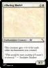
Alluring Model
 Enchantment Creature — Elf
This creature gets +1/+1 for each other enchantment you control.
“This would be more exciting if I wasn’t so stressed.” — Seedspire Student
0/2
1/70
Enchantment Creature — Elf
This creature gets +1/+1 for each other enchantment you control.
“This would be more exciting if I wasn’t so stressed.” — Seedspire Student
0/2
1/70
-
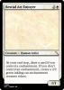
Bestial Art Enjoyer Creature — Human Artist
Creature — Human Artist
 At your end step, draw a card if you control a enchantment. If you don’t control an enchantment, create a 2/2 green inkling cat enchantment creature token.
1/1
2/70
At your end step, draw a card if you control a enchantment. If you don’t control an enchantment, create a 2/2 green inkling cat enchantment creature token.
1/1
2/70
-
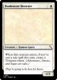
Bookstore Browser
Creature — Human Guest
When this creature enters, if you’ve cast a tale spell this turn, create a Treasure token. (Adventures, Omens, and Sagas are tales.)
They’re going to be here for hours.
1/2
3/70
-
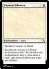
Capture Likeness
Enchantment — Aura
Enchant Creature or Shard
Enchanted creature is a Shard enchantment with “, Sacrifice this enchantment: Scry 1, then draw a card” and loses all other card types and abilities.
4/70
-
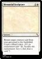
Memorial Sculpture Sorcery
Return target creature card from your graveyard to the battlefield. Create a Shard token. (It’s an enchantment with “, Sacrifice this enchantment: Scry 1, then draw a card.”)
5/70
Sorcery
Return target creature card from your graveyard to the battlefield. Create a Shard token. (It’s an enchantment with “, Sacrifice this enchantment: Scry 1, then draw a card.”)
5/70
-
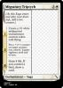
Migratory Triptych
Enchantment — Saga
6/70
-
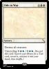
Ode to War
Sorcery
 Destroy all creatures.
Destroy all creatures.
Talecycling  (, Discard this card: Search your library for a Tale card, reveal it, and put it into your hand, then shuffle.)
7/70
(, Discard this card: Search your library for a Tale card, reveal it, and put it into your hand, then shuffle.)
7/70
-
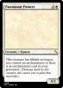
Passionate Painter
Creature — Human
This creature has lifelink as long as you control an enchantment or there is an enchantment card in your graveyard. (Damage dealt by this creature also causes you to gain that much life.)
3/2
8/70
-
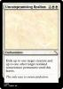
Uncompromising Realism
Enchantment
Exile up to one target creature and up to one other target nonland noncreature permanent until this leaves.
The only way to ensure perfection.
9/70
-
 Visual Archivist
Creature — Bird Advisor
When this enters, create 2 shard tokens.
Visual Archivist
Creature — Bird Advisor
When this enters, create 2 shard tokens.
Plainscycling — , Behold a tale
2/3
10/70
Blue (3 cards)
Black (3 cards)
Red (11 cards)
Green (19 cards)
-
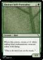
Abstract Self-Portraitist Creature — Bird
When this enters, create a 1/1 white inkling bird enchantment creature token with flying.
“This is the bird I am on the inside.”
1/1
28/70
Creature — Bird
When this enters, create a 1/1 white inkling bird enchantment creature token with flying.
“This is the bird I am on the inside.”
1/1
28/70
-
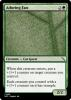
Adoring Fan
Creature — Cat Guest
When this creature enters, put a +1/+1 counter on target creature you control.
Each creature you control with a +1/+1 counter on it has trample.
2/2
29/70
-
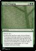
Artful Staging
Sorcery
Choose one—
• Look at the top four cards of your library. You may reveal any number of creature or enchantment cards from among them and put them into your hand. Put the rest on the bottom of your library in a random order.
• Creatures you control gain +1/+1 and trample until end of turn.
30/70
-
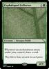
Cephalopod Collector
Creature — Octopus Noble
Whenever an enchantment enters under your control, draw a card.
They like to have an arm in each genre.
2/4
31/70
-
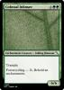
Colossal Inkmaw Enchantment Creature — Inkling Dinosaur
Trample
Enchantment Creature — Inkling Dinosaur
Trample
Forestcycling — , Behold an enchantment.
6/6
32/70
-
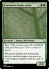
Cutthroat Understudy
Creature — Human Performer
Riot (This creature enters the battlefield with your choice of a +1/+1 counter or haste.)
Whenever Cutthroat Understudy attacks, another target creature you control gains trample until the end of turn.
2/2
33/70
-
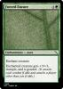
Forced Encore
Enchantment — Aura
Enchant creature
Enchanted creature gets +3/+3, trample, and is goaded. (It attacks each combat if able and attacks a player other than you if able.)
34/70
-
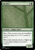
Heckler Creature — Badger Guest
Riot (This creature enters the battlefield with your choice of a +1/+1 counter or haste.)
Creature — Badger Guest
Riot (This creature enters the battlefield with your choice of a +1/+1 counter or haste.)
When this creature enters, it fights up to one target creature you don’t control.
4/4
35/70
-
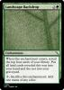
Landscape Backdrop
Enchantment
When this enchantment enters, reveal the top four cards of your library. Put all land cards revealed this way into your hand and the rest into your graveyard.
, Sacrifice this enchantment: Add one mana of any color.
36/70
-
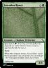
Loxodon Rioter
Creature — Elephant Performer
Spectacle (You may cast this spell for its spectacle cost rather than its mana cost if an opponent lost life this turn.)
Haste
When this creature enters, if you didn’t cast it for its spectacle cost, creatures you control get +1/+0 and gain trample until end of turn.
Address me.
3/3
37/70
-
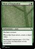
Mote of Inspiration
Enchantment — Aura
Enchant creature
When this Aura enters, create a shard token.
Enchanted creature gets +2/+2 for each other enchantment on the battlefield.
38/70
-
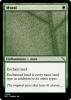
Mural
Enchantment — Aura
Enchant land
Enchanted land is every basic land type in addition to its other types.
The original piece that later lit alarms...
39/70
-
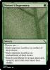
Nature’s Supremacy
Sorcery
Choose one —
• Each opponent sacrifices an artifact of their choice.
• Each opponent sacrifices an enchantment of their choice.
• Search your library for a basic land card, reveal it, put it into your hand, then shuffle.
40/70
-
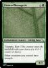
Painted Menagerie
Enchantment Creature — Inkling Beast
Trample, Riot (This creature enters the battlefield with your choice of a +1/+1 counter or haste.)
Other creatures you control have trample.
4/3
41/70
-
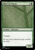
Riled Up Patron
Creature — Elk Guest
Trample
He may have rushed the stage a tad bit too early...
3/2
42/70
-
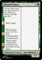
School Project
Enchantment Creature — Saga Inkling Elf
1/1
43/70
-
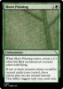
Sheet Printing
Enchantment
When Sheet Printing enters, create a 1/1 white Ink Bird enchantment creature token with flying.
If one or more creature tokens would be created under your control, those tokens plus one are created instead. This ability triggers only once each turn.
44/70
-
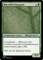
Sketched Stargazer
Enchantment Creature — Inkling Wizard
Constellation — Whenever this creature or another enchantment you control enters, gain 2 life.
Even art can appreciate beauty.
2/3
45/70
-
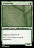
Strict Usher
Creature — Insect Assassin Employee
Vigilance, deathtouch
You better be silent during the performance.
1/2
46/70
Multicolor (8 cards)
-
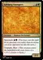
Ashfang Stompers Creature — Human Performer
Spectacle (You may cast this spell for its spectacle cost rather than its mana cost if an opponent lost life this turn.)
Creature — Human Performer
Spectacle (You may cast this spell for its spectacle cost rather than its mana cost if an opponent lost life this turn.)
Trample, Riot (This creature enters the battlefield with your choice of a +1/+1 counter or haste.)
2/2
47/70
-
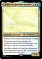
Caellin, Scriptorium Student
Legendary Creature — Elf Detective
Partner with Lyrella, Emberchant Prodigy
Whenever an activated ability of a creature is activated for the first time each turn, put a study counter on Caellin.
Activated abilities of nonland permanents your opponents control can’t be activated more than once each turn.
1/4
48/70
-
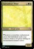
Canvasheart Muse
Creature — Dryad Artist
Whenever a nontoken enchantment enters the battlefield under your control, create a 2/2 green inkling cat enchantment creature token.
2/3
49/70
-
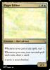
Eager Editor
Creature — Bird Advisor
Whenever you cast a tale spell, scry 1.
Whenever you cast your second spell each turn, draw a card.
A story is never finished.
2/3
50/70
-
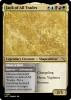
Jack of All Trades Legendary Creature — Shapeshifter
Changeling
Legendary Creature — Shapeshifter
Changeling
Haste, Vigilance
Prowess
2/5
51/70
-
Lyrella, Emberchant Prodigy
Legendary Creature — Cat Performer
Partner with Caellin, Scriptorium Student (When this creature enters the battlefield, target player may put Caellin into their hand from their library, then shuffle.)
, Remove a counter from a creature you control: Lyrella deals 1 damage to any target. Whenever a creature dealt damage this way dies this turn, draw a card.
2/2
52/70
-
Mirrorkey Trainer
Artifact
When this enters the battlefield, gain control of target creature with mana value 3 or less until end of turn.
, , Sacrifice an artifact or creature: Surveil 1, then draw a card.
Almost anything can be training data.
53/70
, Sacrifice an artifact or creature: Surveil 1, then draw a card.
Almost anything can be training data.
53/70
-
Obsessive Virtuoso
Creature — Spirit Performer
Whenever you cast an instant or sorcery spell, Obsessive Virtuoso deals 1 damage to each creature.
When this creature dies, you may exile it. If you do, return target instant or sorcery card from your graveyard to your hand.
1/1
54/70
Non-basic lands (11 cards)
-
Archive of Echoes
Land — Plains Island
This land enters tapped unless you have 20 or more life.
True art is never forgotten.
60/70
-
The Ashfang Theatre
Land
This land enters tapped.
: Add or .
: Add . Activate only if an opponent was dealt combat damage by a creature that entered the battlefield this turn.
61/70
-
The Emberchant Club
Land
This land enters tapped.
: Add or .
: Add . Activate only if you’ve cast an instant and sorcery this turn.
62/70
-
Howling Stage
Land — Mountain Forest
This land enters tapped unless you have 20 or more life.
True art lives in the moment.
63/70
-
Improvokers’ Studio
Land — Swamp Mountain
This land enters tapped unless you have 20 or more life.
True art moves you.
64/70
-
The Mirrorpool
Land
This land enter tapped.
: Add or .
: Add . Activate only if you gained control of a permanent you don’t own this turn.
65/70
-
Petalframe Refuge
Land — Forest Plains
This land enters tapped unless you have 20 or more life.
True art blossoms slowly.
66/70
-
Refraction Vault
Land — Island Swamp
This land enters tapped unless you have 20 or more life.
True art should be enjoyed by all.
67/70
-
The Scriptorium
Land
This land enters tapped.
: Add or .
: Add . Activate only if you’ve cast a permanent spell and a non-permanent spell this turn.
68/70
-
The Seedspire
Land
This land enters tapped.
: Add or .
: Add . Activate only if an nontoken enchantment and creature token entered the battlefield this turn.
69/70
-
Talent Development Program
Land
: Add
, : Add one mana of any color.
, Sacrifice this land: Target creature gains haste this turn.
70/70
{kind=link}
{kind=link}
{kind=link}
{kind=link}
{kind=link}
{kind=link}
{kind=link}
{kind=link}
{kind=link}
 Visual Archivist
Visual Archivist{kind=link}
{kind=link}
{kind=link}
{kind=link}
{kind=link}
{kind=link}
{kind=link}
{kind=link}
{kind=link}
{kind=link}
{kind=link}
{kind=link}
{kind=link}
{kind=link}
{kind=link}
{kind=link}
{kind=link}
{kind=link}
{kind=link}
{kind=link}
{kind=link}
{kind=link}
{kind=link}
{kind=link}
{kind=link}
{kind=link}
{kind=link}
{kind=link}
{kind=link}
{kind=link}
{kind=link}
{kind=link}
{kind=link}
{kind=link}
{kind=link}
{kind=link}
{kind=link}
{kind=link}
{kind=link}
{kind=link}
{kind=link}
{kind=link}
{kind=link}
{kind=link}
{kind=link}
{kind=link}
{kind=link}
{kind=link}
{kind=link}
{kind=link}
{kind=link}
{kind=link}
{kind=link}
{kind=link}
{kind=link}